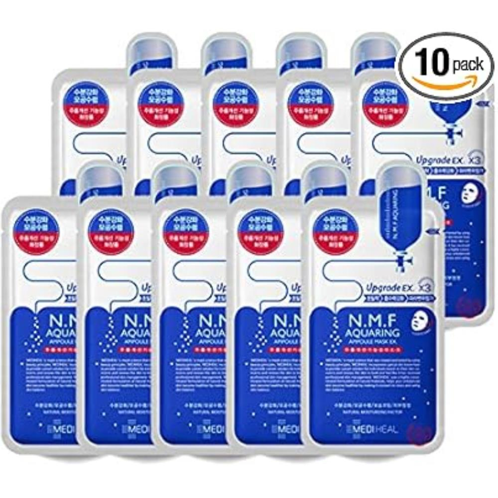
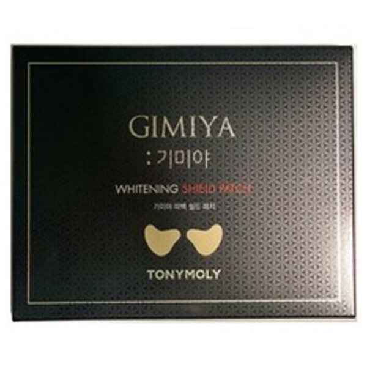
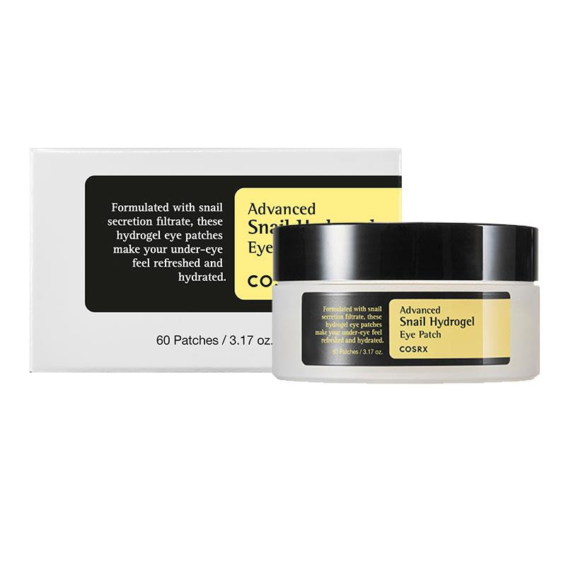
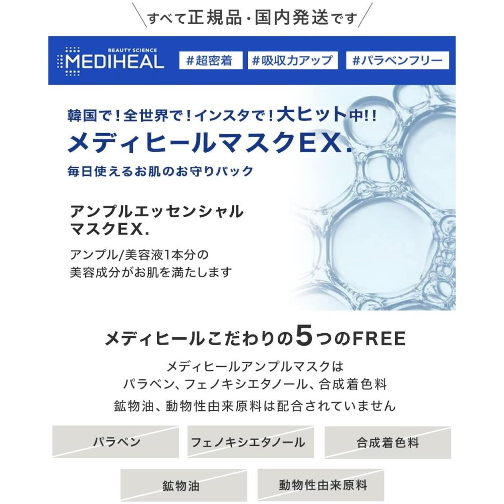

Home › Korean Sheet Mask
6 Best Korean Sheet Masks for Glass Skin (2026)
The Korean sheet masks I stock up on
I rounded up 6 Korean sheet mask worth knowing — the ones K-beauty fans keep coming back to. Real products, honest notes, and roughly what they cost. Prices are approximate; check the retailer for today's price.

N.M.F Aquaring Ampoule Mask
Hydrating ampoule masks — a K-beauty staple pack.
A staple hydrating sheet mask sold in value packs, great for a quick moisture boost. A safe, gentle option to stock up on.
≈ $20.0 (approx) · Ships worldwide
Check price on Amazon →
Gummy Sheet Mask Heartleaf
Calming heartleaf masks with a nice snug fit.
Calming heartleaf masks with a thick, snug 'gummy' sheet that clings well. Nice for redness-prone or stressed skin.
≈ $18.0 (approx) · Ships worldwide
Check price on Amazon →
Dermask Water Jet Vital Hydra Solution
Plumping hydration masks for dry days.
A plumping hydration mask for dry, dull days, with a comfortable gel-like feel. A step up if you want a more premium sheet mask.
≈ $25.0 (approx) · Ships worldwide
Check price on Amazon →
I'm Real Sheet Mask Set
Fun variety set for targeted skin needs.
A fun variety set letting you match different masks to your skin's needs. Affordable and great for trying multiple ingredients.
≈ $15.0 (approx) · Ships worldwide
Check price on Amazon →
Advanced Snail Hydrogel Mask
Cooling hydrogel masks for soothing hydration.
Cooling hydrogel masks with snail mucin for soothing, plumping hydration. The two-piece hydrogel fit stays put better than thin sheets.
≈ $20.0 (approx) · Ships worldwide
Check price on Amazon →
Tea Tree Care Solution Essential Mask
Clarifying tea tree masks for breakouts.
Tea-tree masks aimed at calming breakout-prone, congested skin. A clarifying option to rotate in when skin feels stressed.
≈ $20.0 (approx) · Ships worldwide
Check price on Amazon →Save this for your next K-beauty haul
Prices are approximate and pulled from public shopping data; always check the retailer for the current price and shade/size before buying.